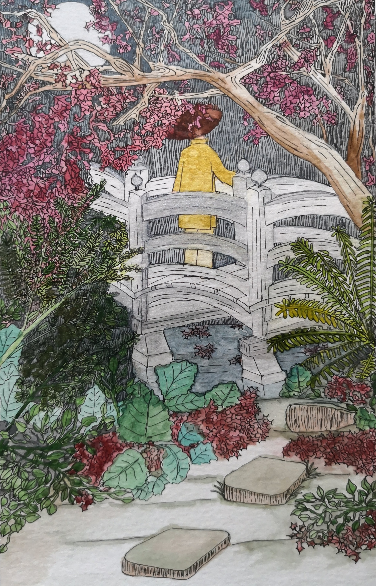

Somos Artistas Multimediales
Mi nombre es Lorena Rivero, soy artista multimedial
Mi relación con el arte
Soy una artista intuitiva y me gusta hacer de todo un poco. Soy una persona curiosa y me gusta aprender cosas nuevas.
Vengo de varios años de aprendizaje y entrenamiento en las Artes del Movimiento. Con el tiempo, tomé clases de dibujo narrativo y pintura. Cuando puedo, también aprendo cerámica.
Amo la caligrafía, y por ello practico la escritura árabe, inglesa y china. De esta última doy talleres dado que soy profesora de idioma chino.
La fotografía y la edición se volvió un hobbie hasta que llegó la curiosidad por la programación... y acá estoy... iniciándome.
Mi objetivo es aprender, aprender y aprender...

×